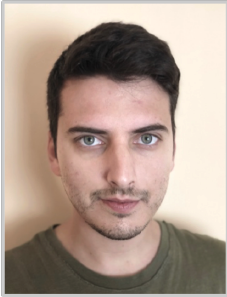

JOEL VERGER SERRANO
Graduat Enginyería Informàtica
FORMACIÓ
MÁSTER UNIVERSITARIO EN SEGURIDAD DE LAS TECNOLOGÍAS DE LA
INFORMACIÓN Y DE LAS COMUNICACIONES
SEP 2018 - SEP 2020
Universitat Oberta de Catalunya
GRADO EN INGENIERIA INFORMÁTICA
SEP 2011 - JUN 2016
Universitat Politècnica de València
EXPERIÈNCIA PROFESIONAL
IT MANAGER
SEP 2018 - ACT
Ayuntamiento de Ibi
INGENIERO DE MONITORIZACIÓN
SEP 2017 - JUN 2018
Ayuntamiento de Ibi
TÉCNICO DE SISTEMAS Y COMUNICACIONES
FEB 2016 - SEP 2017
Sothis, Paterna

INFORMACIÓ PERSONAL
Nom: Joel Verger Serrano
Naixement: 24 Abril 1991
Nacionalitat: Espanya
CONTACTE
690 315 185
joelbxt@gmail.com
Valencia
Linkedin
IDIOMES
Castellà: Natiu
Valencià: Natiu (C1 certificado)
Anglès: Mitjà (B2 acreditació UPV)
INFORMACIÓ ADICIONAL
Carnet de conduir B1
Cotxe propi
Disponibilitat per viatjar